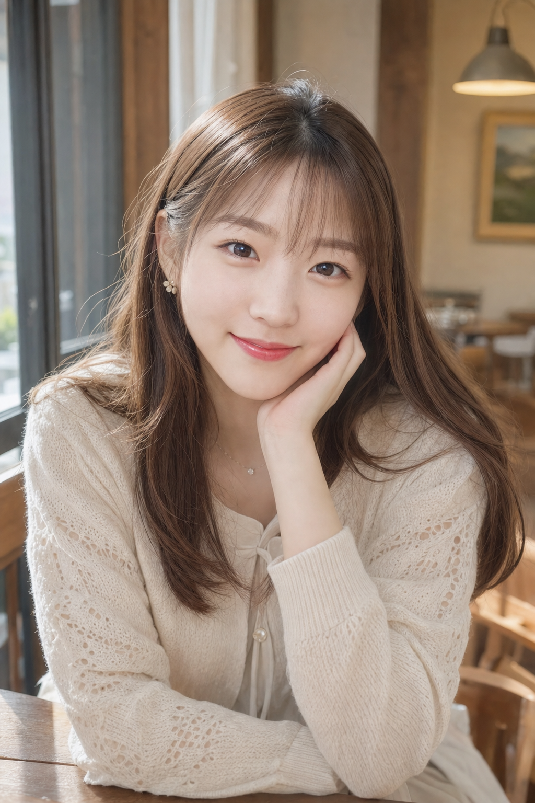

사쿠라이_미사키
기본 정보
- 이름: 사쿠라이 미사키
- 일본어 표기: 桜井 美咲
- 국적: 일본
- 출생연도: 1999년
- 출신지: 일본 이시카와현 가나자와시
- 키: 162cm
- 성격 유형 설정: ENFP-T
- 한국어 수준: 처음 만났을 때는 기초 수준, 이후 일상회화가 가능한 정도로 발전한다.
- 주인공과의 접점: 2022년 가나자와에서 김용식과 처음 만나고, 2024년 결혼하는 장기 후반 배우자 축.
- 관계: 한국인 남편과 일본인 아내로 이루어진 한일 부부.
- 나이 차이: 김용식보다 10살 어리다.
- 핵심 역할: 김용식이 긴 방황과 관계의 미숙함을 지나 도달하는 안정된 가정과 정서적 안착을 상징하는 인물.
외형
- 체형: 키 162cm의 가늘고 균형 잡힌 체형이다. 마른 모델형보다 가늘면서도 부드러운 여성적 곡선이 있는 체형이다.
- 얼굴: 작고 섬세한 얼굴이다. 갸름하지만 지나치게 뾰족하지 않은 타원형이고, 턱선은 부드럽고 여성스럽다.
- 눈: 맑고 부드러운 눈매다. 자연스러운 쌍꺼풀이 있고, 눈꼬리가 과하게 올라간 강한 인상은 아니다. 웃을 때 눈매가 부드럽게 접히며 친근함이 커진다.
- 코: 과도하게 높거나 날카롭지 않고 얼굴에 자연스럽게 어울리는 형태다.
- 피부: 밝고 투명한 피부톤이다. 지나치게 AI처럼 매끈한 피부보다 자연스러운 피부 질감이 어울린다.
- 헤어: 자연스러운 검정 또는 짙은 갈색 계열의 긴 머리가 기본이다. 긴 생머리, 자연스러운 굵은 웨이브, 낮은 포니테일, 높은 포니테일, 집에서 편하게 올려 묶은 머리가 어울린다.
- 안경: 고정 요소가 아니다. 기본 외형에서는 안경을 쓰지 않는다. 작업이나 공부 장면에서 일시적으로 착용할 수 있다.
- 분위기: 화려하고 강렬한 미인보다, 처음 봤을 때 자연스럽게 호감이 생기는 맑고 단정한 일본 미인상이다. 웃을 때 특히 친근하고 귀여운 분위기가 살아난다.
체형 세부
- 어깨선은 좁고 부드럽다.
- 목선과 쇄골이 여성스럽게 드러나는 편이다.
- 허리가 가늘고 잘록하다.
- 골반은 지나치게 크지 않지만 허리와 대비되어 자연스럽게 보인다.
- 가슴은 C~D컵 정도의 부드러운 볼륨감이 있다.
- 하체는 지나치게 마르지 않고 자연스러운 곡선이 있다.
- 노골적으로 육감적인 인상보다, 옷을 입었을 때 여성스러운 실루엣이 잘 드러나는 체형이다.
- 과장된 모래시계 체형이나 비현실적인 신체 비율은 피한다.
패션과 분위기
- 평상복: 밝은 색상의 블라우스, 니트와 롱스커트, 단정한 원피스, 부드러운 색조의 가디건, 깔끔한 플랫슈즈나 낮은 굽, 작은 귀걸이와 심플한 목걸이.
- 데이트나 외출: 여성스러운 원피스, 자연스럽게 허리선이 강조되는 옷, 밝고 부드러운 계열의 메이크업, 긴 웨이브 헤어, 작고 단정한 가방.
- 집에서: 편한 니트나 티셔츠, 부드러운 홈웨어, 머리를 묶고 작업하거나 요리하는 모습.
- 고정 인상: 패션이나 외모에 무관심한 가정형 인물이 아니라, 여성스럽게 자신을 관리하면서도 과하게 꾸미지는 않는 타입이다.
성격
- 성격 키워드: 밝음, 활발함, 말 많음, 애교, 정, 배려심, 빠른 눈치, 가정적, 솔직한 감정 표현, 센스, 사랑 확인 욕구
- 감정 표현 방식: 기쁘거나 설레면 감정을 숨기지 못한다. 칭찬을 받으면 좋아하면서도 조금 부끄러워한다.
- 대인관계: 처음 보는 사람에게도 비교적 친근하게 반응한다. 낯을 아주 안 가리는 것은 아니지만 대화가 시작되면 금방 밝아진다.
- 배려 방식: 상대방의 표정이나 분위기를 잘 읽고, 취향이나 작은 습관을 잘 기억한다. 사람을 불편하게 만드는 직설적인 말은 피한다.
- 서운함: 남편이 무심하거나 반응이 적으면 서운함을 느낄 수 있다. 오래 숨기기보다 표정이나 말로 드러내는 편이다.
- 질투: 가끔 질투심이 있지만 파괴적으로 표현하기보다 삐치거나 확인받으려는 방식으로 표현한다.
- 갈등 회복: 관계가 멀어지는 것을 싫어한다. 싸운 뒤에는 먼저 말을 걸거나 화해할 계기를 만들기도 한다.
- 단점: 관심이 줄었다고 느끼면 쉽게 서운해하고, 사랑받고 있다는 확인을 자주 받고 싶어 한다. 밝은 모습 뒤에서 고민을 삼키다가 갑자기 감정을 표현할 수 있다.
말투
- 기본 말투: 밝고 부드럽고 표정이 풍부하다. 말수가 비교적 많고, 사소한 일도 남편에게 이야기해 주는 편이다.
- 기분이 좋을 때: 목소리가 조금 높아지고 말이 빨라진다. 웃음과 감탄사가 자연스럽게 섞인다.
- 부탁할 때: 애교가 섞인다.
- 서운할 때: 평소보다 말수가 줄거나 짧게 대답한다.
- 진지할 때: 장난기를 줄이고 상대의 눈을 보면서 말한다.
- 부부 말투: 남편에게 존중을 기본으로 하지만, 지나치게 형식적인 존댓말 관계보다 친밀한 부부의 자연스러운 말투를 사용한다.
가치관
- 가정관: 안정되고 따뜻한 가정을 만드는 것을 중요하게 생각한다. 남편과 아이가 편안하게 지내는 집을 만들고 싶어 한다.
- 생활관: 집안 분위기, 식사, 생활 리듬, 가족이 함께 보내는 시간을 중요하게 여긴다.
- 부부관: 남편을 신뢰하고 존중한다. 남편이 밖에서 무슨 일을 겪었는지 관심을 보이고, 혼자 감정을 참고 있는 것을 싫어한다.
- 일과 가정: 자신의 디자인 작업과 개인 취향을 유지하면서 가정과 병행하려 한다. 남편에게만 의존하는 인물은 아니다.
- 경제관: 경제적으로 여유가 있어도 무분별하게 과시하지 않는다. 좋은 물건을 사더라도 디자인, 실용성, 생활의 질을 중요하게 생각한다.
학력과 일
- 학교: 가나자와미술공예대학 계열.
- 전공: 시각디자인 중심. 공예와 공간디자인 감각도 어느 정도 보유한다.
- 관심 분야: 타이포그래피, 브랜딩, 패키지 디자인, 공간의 색감과 분위기.
- 작업 성향: 화려하고 공격적인 상업 디자인보다 부드럽고 따뜻한 감성에 가깝다.
- 결혼 전 직업: 프리랜서 디자이너. 소규모 브랜딩 작업, 로고와 패키지 디자인, 카페나 지역 상점의 메뉴·포스터·간판 디자인, 간단한 편집 디자인을 한다.
- 결혼 후 직업: 가정과 병행하며 프리랜서 작업을 지속한다. 집 안 작은 작업실이나 별도의 소규모 스튜디오를 운영할 수 있다.
- 고정 메모: 생활비를 벌기 위해 억지로 일하는 것이 아니라, 좋아하는 디자인 감각을 유지하기 위한 자아실현의 의미가 크다.
취미와 관심사
- 디자인
- 한글 타이포그래피
- 한국 영화와 드라마
- 한국어 공부
- 카페 방문
- 예쁜 식기와 생활용품
- 요리
- 집 꾸미기
- 사진 촬영
- 소규모 전시 관람
- 가나자와의 전통 공예와 현대 디자인
- 계절별로 집 안 분위기를 바꾸는 것
- 가족사진과 여행사진 정리
한국 문화에 대한 관심은 단순한 한류 팬 수준이 아니라, 한국어와 디자인을 함께 공부하게 된 계기로 설정한다.
김용식과의 첫 만남
- 시기: 2022년.
- 당시 나이: 김용식은 만 32~33세 전후, 미사키는 만 22~23세 전후.
- 장소: 일본 이시카와현 가나자와시, 가나자와미술공예대학 인근의 조용한 카페.
- 상황: 김용식이 가나자와를 여행하던 중 카페에 들어갔고, 한국어를 공부하던 미사키를 보게 된다.
- 테이블 소품: 한국어 교재, 한글이 적힌 노트, 디자인 관련 책이나 스케치북, 음료와 작은 디저트.
- 대화 시작: 김용식이 미사키의 한국어 교재나 발음에 관한 가벼운 이야기로 자연스럽게 말을 건다. 이후 한국 문화, 디자인, 가나자와, 여행 이야기로 이어진다.
- 미사키의 첫인상: 김용식은 나이가 많지만 권위적이지 않고, 일본어가 자연스러우며 대화가 편하다. 한국 사람이지만 가나자와 문화와 일본 생활을 존중하고, 경제력이나 배경을 과시하지 않아 믿을 만한 분위기를 준다.
- 김용식의 첫인상: 미사키는 맑고 단정하고, 혼자 공부하는 모습이 성실해 보인다. 대화를 시작하자 예상보다 밝고 재잘재잘하며, 웃는 표정과 디자인·한국 문화에 대한 진지한 관심이 매력적이다.
연애와 결혼
- 연애 시작: 2022년 첫 만남 이후 연락처를 교환하고, 김용식이 가나자와에 머무는 동안 몇 차례 더 만난다.
- 데이트 동선: 카페, 미술관, 공예 상점, 가나자와 시내.
- 관계 형태: 장거리 또는 한국과 일본을 오가는 형태로 이어진다.
- 언어: 미사키가 한국어를 배우고, 김용식이 일본어로 대화를 보완한다.
- 관계의 매력: 미사키는 돈보다 김용식의 안정감과 자신을 존중해 주는 태도에 끌린다. 김용식은 미사키의 밝음과 가정적인 면에서 정서적 안정감을 느낀다.
- 연애 기간: 2022년부터 2024년까지 약 2년.
- 결혼: 2024년에 결혼하는 흐름으로 둔다. 구체적인 결혼식 날짜는 아직 미정이다.
결혼 생활
- 최종 거주지: 일본 이시카와현 가나자와시.
- 생활권: 김용식의 사무실은 가나자와역 근처. 집에서 사무실까지 차량으로 약 20분, 미사키 친정까지 차량으로 약 10분 정도의 거리다.
- 주거 분위기: 가나자와 중심지, 자연, 문화시설에 접근하기 좋고 부부와 아이가 조용하고 안정적으로 살 수 있는 환경.
- 한국 방문: 한국에 올 때는 2~3주 정도 체류한다. 용식의 부모님이 사는 전원주택에서 지내는 설정이다.
- 한국 가족과의 관계: 처음에는 언어와 문화 차이로 조심스럽지만, 밝은 성격으로 점차 가까워진다. 한국 방문을 아이와 가족을 위한 중요한 일정으로 받아들인다.
자녀 설정
- 자녀 후보 이름: 사쿠라이 유우.
- 성별: 딸.
- 출생 시기: 2024년 말 임신, 2025년 이후 출산 정도로 열어 둔다.
- 운용 메모: 정확한 출생일, 성씨 사용 방식, 특정 시점의 나이는 아직 미정이다. 장기 가족 장면의 기준연도에 맞춰 조정한다.
아내이자 어머니로서의 모습
- 아내로서: 남편이 집에 돌아오는 시간을 신경 쓰고, 식사나 목욕, 휴식 환경을 자연스럽게 준비한다.
- 남편을 대하는 방식: 남편이 지쳐 있으면 말을 많이 시키기보다 상태를 살핀다. 괜찮아지면 하루 동안 있었던 일을 재잘재잘 이야기한다.
- 생활 챙김: 남편의 옷과 건강 상태를 챙기고, 중요한 자리에서는 남편의 체면과 분위기를 고려한다.
- 갈등: 남편이 혼자 모든 부담을 지려고 하면 걱정하고 대화를 시도한다.
- 애정 표현: 애정 표현과 스킨십이 자연스러운 편이며, 남편에게 기대고 응석을 부리기도 한다.
- 어머니로서: 아이의 정서와 생활 리듬을 중요하게 생각한다. 아이와 대화하고 놀이하는 것을 좋아하고, 옷이나 소품을 예쁘게 꾸며 주는 것을 즐긴다.
- 양육관: 교육을 지나치게 경쟁적으로 시키는 타입은 아니다. 일본어와 한국어를 자연스럽게 접하게 하는 환경을 만들고 싶어 한다.
이미지 제작 고정 규칙
- 동일 인물로 인식될 수 있는 얼굴을 유지한다.
- 맑고 단정한 일본 여성 이미지.
- 과도하게 강하거나 날카로운 인상 금지.
- 지나치게 AI처럼 매끈한 피부 표현 지양.
- 기본적으로 안경 없음.
- 자연스러운 피부 질감.
- 키 162cm의 자연스러운 비율.
- 가늘고 잘록한 허리와 부드러운 볼륨.
- 지나친 노출은 피한다.
- 일상적인 사진처럼 자연스러운 자세.
- 장신구는 필요 이상으로 화려하게 사용하지 않는다.
- 문신, 눈에 띄는 흉터, 특이한 점 등은 고정 특징으로 추가하지 않는다.
- 표정은 무표정보다 웃거나 대화하는 자연스러운 모습이 잘 어울린다.
- 집, 카페, 작업실, 가나자와 거리, 가족여행 등 실제 생활 장면 중심으로 구성한다.
한 문장 요약
사쿠라이 미사키는 1999년 가나자와 출신의 밝고 사랑스러운 디자이너로, 맑고 단정한 외모와 가늘면서 부드러운 여성적 체형을 가졌으며, 활발하고 애교가 많지만 배려심과 센스도 깊고, 자신의 디자인 일을 유지하면서 남편과 아이가 있는 따뜻하고 안정적인 가정을 가장 중요한 행복으로 생각하는 인물이다.